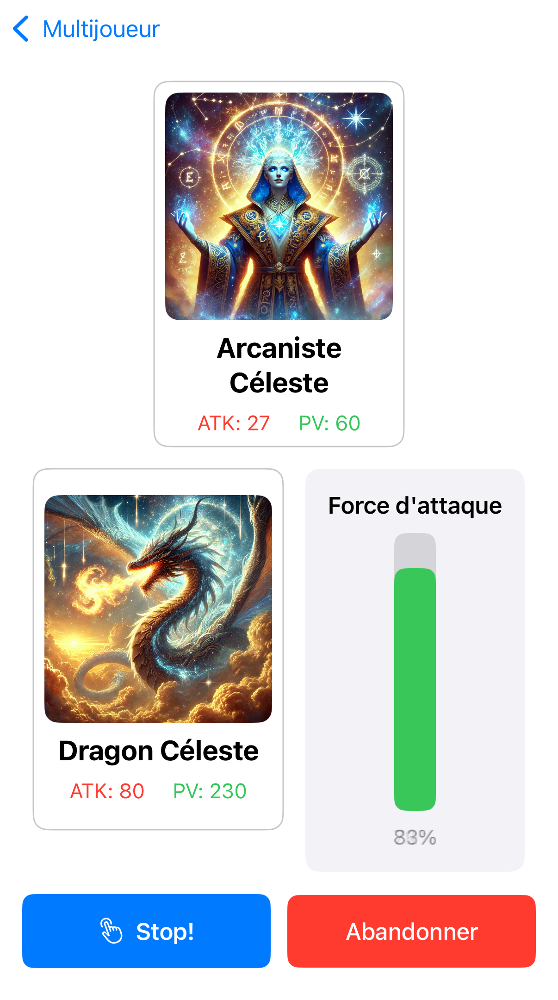

Le Concept
Tes cartes deviennent plus puissantes grâce à tes performances réelles : une bonne nuit de sommeil ou des pas effectués débloquent des bonus ou améliorent ton deck.
Dans Level Up IRL, chaque joueur construit un deck de cartes. Mais contrairement aux jeux classiques, les améliorations ne se débloquent pas seulement en jouant : elles sont directement liées à ton activité réelle. Marcher, bien dormir, bouger — chaque effort est récompensé. Le jeu devient un prolongement ludique de ta santé.
Fonctionnalités
- Bonus selon ta forme physique
- Deck de cartes évolutif
- Combats stratégiques 1v1
- Intégration Apple Health
- Objectifs de sommeil réels
Le jeu propose plusieurs fonctionnalités innovantes : suivi de tes données de santé via Apple Health, amélioration automatique de tes cartes si tu atteins tes objectifs, et un système de combat stratégique. Tu joues tout en prenant soin de toi, et tu progresses vraiment dans la vie comme dans le jeu.
Classement mondial
Un classement dynamique basé sur ton activité en jeu ET dans la vraie vie. Les joueurs les plus réguliers, à la fois dans leurs efforts réels et leurs victoires en duel, montent au sommet.
Modes de jeu
Trois modes sont disponibles :
Multijoueur en ligne pour affronter d'autres joueurs,
Défis solo à réussir en temps limité,
et une Collection pour explorer et gérer ton deck.
Collection de cartes
Tu peux consulter et organiser ta collection. Les cartes gagnent en puissance si tu dors bien ou atteins tes objectifs d’activité. La gestion de ton deck est essentielle pour gagner.
Cartes en vedette
Voici deux exemples de cartes puissantes du jeu. Elles peuvent évoluer selon tes statistiques. Plus tu es actif, plus leurs effets deviennent redoutables en combat.
Combat
Les combats se jouent au tour par tour, avec stratégie. Tu choisis quelles cartes utiliser et quand. Grâce aux bonus santé, certaines cartes deviennent plus fortes ou débloquent des effets spéciaux.

Écran de victoire
À la fin d’un combat, un écran clair te montre ton score, les récompenses, et si ta progression personnelle t’a donné un avantage. C’est motivant, gratifiant, et connecté à ta vraie performance.
Accéder au code
Notre projet est open source, explore-le ou contribue ! Nous avons documenté tout le code pour permettre à d’autres étudiants ou développeurs de s’en inspirer ou de l’améliorer.
Voir sur GitHub